BlockOut — Thư viện ảnh sự kiện: ép mở trên LDPlayer
Mục lục sự kiện
- Kết quả đợt bổ sung 13/10/2026
- Bản đồ ảnh bổ sung
- Dragon Treasure — tiến độ và khóa kích hoạt
- Mission Carnival — từ CLAIM đến Stage 2 và hoàn tất
- Rocket Race — thử nhánh cuối và giới hạn kết quả offline
- Lily Leap — nhánh thắng 5/5, chia giải và thất bại
- UFO Rise — đỉnh 120, thưởng cuối và checkpoint
- Star Blaze — trước mốc cuối và trạng thái hoàn thành
- Block Pass — premium, nhận từng bậc và Bonus Vault
- Nature Collection — từ đổi sao đến hoàn tất và mở Grand Collection
- Arena — sảnh thi đấu và Round 1
- Voyage Deal — offer cứu vãn khi hết giờ
- Weekly Contest — màn kết quả hạng nhất
- Special Offer — chưa mở được popup
- Cách dùng ảnh trong bài phân tích
Kết quả đợt bổ sung 13/10/2026
Đã chọn 42 ảnh mới cho 12 case. Trong đó, 9 tính năng đã mở được popup hoặc màn sự kiện, Arena mới xác nhận được sảnh Round 1; Rocket Race và Special Offer giữ lại ảnh kết quả chưa mở thành công để mô tả đúng giới hạn. Các ảnh đều chụp trực tiếp từ game qua ADB, không dựng lại giao diện.
Các chuỗi đáng xem: Mission Carnival nhận từng nhiệm vụ → rương Stage 1; Lily Leap thắng và thua; UFO Rise rương mốc 120 và checkpoint 46; Block Pass nhận premium và Bonus Vault; Nature Collection đổi sao → hoàn tất album → Acorn Token → Grand Nature Collection; Voyage Deal sau khi hết giờ; Weekly Contest ở trạng thái Finished.
Trạng thái máy sau thử nghiệm: đã khôi phục 8 file dữ liệu trước phiên và kiểm tra SHA-256 từng file, trả timer Level 350 về 60 giây, gỡ hai rule chặn mạng tạm của game và đưa ADB về quyền shell thường. Các thay đổi premium, tiến độ và thưởng của fixture không được giữ lại.
Đợt chụp 2026-10-13: 42 ảnh được chọn, 12 tính năng có ảnh mới. Ảnh là giao diện được game dựng thật trên LDPlayer sau khi chuẩn bị trạng thái sự kiện cục bộ. Mỗi ảnh ghi fixture để phân biệt với sự kiện tự mở theo lịch server.
Phạm vi bằng chứng: ảnh xác nhận giao diện và trạng thái nhìn thấy trong fixture. Ảnh không tự xác nhận lịch live, cohort được nhận event, giao dịch thanh toán thành công hay toàn bộ vòng đời sự kiện. Chỉ các thao tác và kết quả nêu rõ trong mô tả mới được coi là đã quan sát.
| Lớp bằng chứng | Kết luận có thể dùng | Điều chưa được chứng minh chỉ bằng ảnh |
|---|---|---|
| Giao diện từ fixture | Popup, giá, mốc và trạng thái mà game đã dựng ở lần chụp | Lịch mở thật, cohort đủ điều kiện hoặc số trận thực đã thắng |
| Thao tác trong app | Chuyển trạng thái sau nút bấm được mô tả rõ, ví dụ CLAIM → COMPLETED | Hoàn thành tự nhiên các điều kiện đã gán trước bằng fixture |
| Đối chiếu số dư cục bộ | Chỉ các số trước/sau được ghi cụ thể trong phần mô tả | Server đã cấp, xác thực hoặc đồng bộ phần thưởng thành công |
Bản đồ ảnh bổ sung
| Sự kiện / tính năng | Ảnh mới | Điều cần đọc cùng ảnh |
|---|---|---|
| Dragon Treasure — tiến độ và khóa kích hoạt | 3 | Giá chỉ phản ánh bản cài và tài khoản kiểm thử tại lần chụp. Chưa mua gói hoặc xác minh giao dịch IAP. Tiến độ được gán cục bộ, không phải các màn đã thắng trong phiên; ảnh hướng dẫn không chứng minh phần thưởng minh họa đã được cấp. |
| Mission Carnival — từ CLAIM đến Stage 2 và hoàn tất | 5 | Điều kiện hoàn thành nhiệm vụ đã được gán trước; phiên này kiểm tra luồng nhận và cách UI đổi trạng thái. Đã quan sát popup thưởng, chưa có bằng chứng server cấp hoặc đồng bộ thành công. Ảnh Stage 5 không đại diện cho việc chơi đủ năm stage trong phiên. |
| Rocket Race — thử nhánh cuối và giới hạn kết quả offline | 1 | Chưa có bằng chứng nhánh thưởng cuối có thể hoàn tất offline. Đối chiếu native cho thấy luồng Jetpack có điều kiện IsSynced; đây là giới hạn cần đọc cùng ảnh lỗi mạng, không phải bằng chứng rằng chỉ sửa một cờ sẽ tái hiện chính xác luồng server. Không chuyển ca bị chặn này thành ca thắng hoặc đã nhận thưởng. |
| Lily Leap — nhánh thắng 5/5, chia giải và thất bại | 4 | Số người và kết quả xuất phát từ cache, không phải cuộc đua live trong ngày chụp. Đã quan sát popup thưởng nhưng chưa xác nhận  185 coin cộng vào kho; còn bước Tap to Claim ở ảnh cuối nhánh thắng. Khung bàn trước kết toán có animation cập nhật số người. Hai nhánh thắng/thua sử dụng hai fixture độc lập. 185 coin cộng vào kho; còn bước Tap to Claim ở ảnh cuối nhánh thắng. Khung bàn trước kết toán có animation cập nhật số người. Hai nhánh thắng/thua sử dụng hai fixture độc lập. |
| UFO Rise — đỉnh 120, thưởng cuối và checkpoint | 3 | Đã có bằng chứng cộng 1.200 coin cục bộ trong fixture, chưa xác minh đồng bộ hoặc cấp thưởng từ server. Tiến độ 120 và nhánh rơi 76 → 46 đều được chuẩn bị, không phải 120 hoặc 76 màn đã chơi trong phiên. Ảnh checkpoint ghi trạng thái sau rơi, không chụp animation thất bại. |
| Star Blaze — trước mốc cuối và trạng thái hoàn thành | 3 | Hai mốc điểm được gán bằng hai fixture, chưa quan sát một màn chơi tự nhiên kiếm 100 điểm cuối. Ảnh Completed! xác nhận trạng thái kết thúc trên UI, chưa chứng minh 2.000 coin thưởng cuối được cộng vào kho hoặc đồng bộ với server. Hệ số ×100 là giá trị nhìn thấy tại fixture gần hoàn tất, không tự chứng minh công thức thưởng cho mọi loại màn. |
| Block Pass — premium, nhận từng bậc và Bonus Vault | 4 | Premium là trạng thái gán cục bộ; không mua IAP. Dấu tích bậc 3 có snapshot xác nhận cộng 100 coin cục bộ, chưa chứng minh server cấp hoặc đồng bộ. Trạng thái đã nhận 31 bậc và 1.054 chìa thuộc fixture riêng, không phải thành tích chơi trong phiên. Số 200/5.000 là số coin đang thể hiện trong Vault; chưa kiểm thử nhận Vault lúc hết hạn. |
| Nature Collection — từ đổi sao đến hoàn tất và mở Grand Collection | 13 | Set và album đã hoàn tất trong fixture cục bộ; snapshot xác nhận chuyển sang isGoldCollectionActive=true. Không phải hành trình thu thập tự nhiên hoặc xác nhận server. Một chuỗi mở gói không đủ suy ra xác suất drop; số sao và kho thẻ đầu vào đã được gán để kiểm thử. |
| Arena — sảnh thi đấu và Round 1 | 1 | Các lần chạm icon chưa mở bảng xếp hạng trong phiên này; không coi sảnh Home là bằng chứng đã mở đầy đủ leaderboard. Điểm và đối thủ là fixture QA. |
| Voyage Deal — offer cứu vãn khi hết giờ | 3 | Offer và số dư là fixture từ gói fallback. Giá là hiển thị của bản cài; không nhấn mua, không kiểm tra billing. Timer gốc 60 giây được khôi phục sau case; badge 0% OFF không đại diện chiến dịch đang chạy. |
| Weekly Contest — màn kết quả hạng nhất | 1 | Hạng và điểm được sửa để kiểm thử UI; không phải chiến thắng live. Không nhấn Continue/claim và chưa xác nhận cộng 2.000 coin. |
| Special Offer — chưa mở được popup | 1 | Mã game yêu cầu bundle surf_sale_bundle đã tải và load; dữ liệu cache khảo sát chưa có bundle đó. Điều kiện này giải thích giới hạn có thể gặp, nhưng ảnh Home không đủ tự chứng minh trạng thái nội bộ. Chưa có ảnh popup Special Offer; không thực hiện mua hoặc giả dựng ảnh. |
Dragon Treasure — tiến độ và khóa kích hoạt
Case BO-EVT-TreasureDrill. Đối chiếu feature: TreasureDrill. Bằng chứng: 3 ảnh được chọn.
TreasureDrill · Setup — trạng thái được chuẩn bị
Fixture drill-introduced bật cấu hình sự kiện, kéo dài instance đã cache và đánh dấu đã giới thiệu; trạng thái mua vẫn chưa kích hoạt. Fixture drill-progress riêng gán tiến độ 12 lần thắng để xem các mốc phía dưới. Các thao tác chuẩn bị này chỉ thay trạng thái cục bộ của phiên kiểm thử.
Các fixture được ghi cho nhóm ảnh này:
- drill-introduced
- drill-progress
Fixture là tiền điều kiện kiểm thử được gán cục bộ. Nếu có nhiều fixture, chúng là các lần chuẩn bị riêng; không gộp thành một phiên chơi tự nhiên liên tục.
TreasureDrill · Trigger / thao tác và chuyển trạng thái được ghi nhận
Mở Dragon Treasure từ trạng thái đã chuẩn bị, xem lớp hướng dẫn và phần dưới của đường thưởng. Đối chiếu phần thưởng theo tiến độ với nút kích hoạt trả phí; không thực hiện thanh toán.
Popup dùng tên Dragon Treasure, hiển thị giá đang cache 52.000 VND và đường thưởng tối đa 10.000 coin. Các mốc đầu còn khóa khi chưa kích hoạt; lớp hướng dẫn trình bày chuỗi thắng màn → CLAIM → mốc tiếp theo. Với tiến độ được gán là 12 lần thắng, các mốc cao 40, 50, 70 và 80 vẫn có khóa trả phí. Quan sát này tách điều kiện tiến độ khỏi điều kiện sở hữu gói.
TreasureDrill · Quan sát cần đối chiếu
Bảng dưới là danh mục điểm quan sát theo thứ tự ảnh trong manifest. Chỉ câu nào ghi rõ thao tác trước/sau mới biểu thị một chuyển trạng thái đã thực hiện.
| Ảnh | Kết quả được ghi nhận |
|---|---|
| TreasureDrill 01 | Dragon Treasure chưa được kích hoạt: các mốc 1, 3, 5 và 10 còn biểu tượng khóa; nút kích hoạt hiển thị giá 52.000 VND. Đây là giá nhìn thấy trên bản cài và tài khoản kiểm thử, chưa có giao dịch thanh toán. |
| TreasureDrill 02 | Lớp hướng dẫn của Dragon Treasure minh họa chuỗi thắng màn → xuất hiện nút CLAIM → tiếp tục tới mốc thưởng kế tiếp. Đây là nội dung hướng dẫn do game trình bày, không phải bằng chứng đã nhận các phần thưởng minh họa. |
| TreasureDrill 03 | Với tiến độ được gán là 12 lần thắng, phần dưới của đường thưởng hiển thị các mốc 40, 50, 70 và 80. Biểu tượng khóa trả phí vẫn còn; tiến độ thắng và trạng thái kích hoạt là hai điều kiện riêng trong fixture này. |

TreasureDrill · Giới hạn kết luận của case
Giá chỉ phản ánh bản cài và tài khoản kiểm thử tại lần chụp. Chưa mua gói hoặc xác minh giao dịch IAP. Tiến độ được gán cục bộ, không phải các màn đã thắng trong phiên; ảnh hướng dẫn không chứng minh phần thưởng minh họa đã được cấp.
TreasureDrill · Ảnh minh họa và fixture từng ảnh
TreasureDrill · ảnh 01
Trạng thái bằng chứng: OFFLINE FIXTURE — ép mở cục bộ trên LDPlayer. Setup của ảnh: drill-introduced.
Quan sát: Dragon Treasure chưa được kích hoạt: các mốc 1, 3, 5 và 10 còn biểu tượng khóa; nút kích hoạt hiển thị giá 52.000 VND. Đây là giá nhìn thấy trên bản cài và tài khoản kiểm thử, chưa có giao dịch thanh toán.
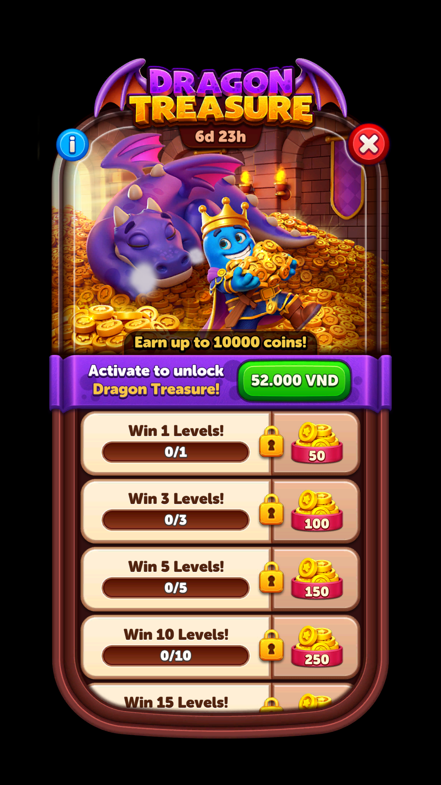
TreasureDrill · ảnh 02
Trạng thái bằng chứng: OFFLINE FIXTURE — ép mở cục bộ trên LDPlayer. Setup của ảnh: drill-introduced.
Quan sát: Lớp hướng dẫn của Dragon Treasure minh họa chuỗi thắng màn → xuất hiện nút CLAIM → tiếp tục tới mốc thưởng kế tiếp. Đây là nội dung hướng dẫn do game trình bày, không phải bằng chứng đã nhận các phần thưởng minh họa.

TreasureDrill · ảnh 03
Trạng thái bằng chứng: OFFLINE FIXTURE — ép mở cục bộ trên LDPlayer. Setup của ảnh: drill-progress.
Quan sát: Với tiến độ được gán là 12 lần thắng, phần dưới của đường thưởng hiển thị các mốc 40, 50, 70 và 80. Biểu tượng khóa trả phí vẫn còn; tiến độ thắng và trạng thái kích hoạt là hai điều kiện riêng trong fixture này.

Mission Carnival — từ CLAIM đến Stage 2 và hoàn tất
Case BO-EVT-MagicLab. Đối chiếu feature: MagicLab. Bằng chứng: 5 ảnh được chọn.
MagicLab · Setup — trạng thái được chuẩn bị
Fixture lab-ready đặt cả bốn nhiệm vụ Stage 1 vào trạng thái đủ điều kiện nhận. Fixture lab-final là lần chuẩn bị riêng, gán trạng thái đã nhận các rương và hoàn tất nhiệm vụ Stage 5; không nối tiếp tự nhiên từ Stage 1.
Các fixture được ghi cho nhóm ảnh này:
- lab-ready
- lab-final
Fixture là tiền điều kiện kiểm thử được gán cục bộ. Nếu có nhiều fixture, chúng là các lần chuẩn bị riêng; không gộp thành một phiên chơi tự nhiên liên tục.
MagicLab · Trigger / thao tác và chuyển trạng thái được ghi nhận
Trong lab-ready, bấm nhận từng nhiệm vụ, quan sát hàng đổi trạng thái, rồi mở phần thưởng rương Stage 1. Sau đó dùng fixture lab-final riêng để đối chiếu giao diện hoàn tất toàn bộ sự kiện.
Bấm nhận nhiệm vụ đầu làm hàng Superhard đổi từ CLAIM sang COMPLETED, trong khi ba hàng còn lại vẫn chờ nhận. Sau khi nhận đủ bốn nhiệm vụ, game chuyển sang Stage 2 và hiện nút Claim cho rương Stage 1. Popup rương trình bày  1 giờ mạng vô hạn cùng Freeze, Rocket và UFO, mỗi loại một. Ảnh cuối từ lab-final cho thấy năm rương có dấu tích và bốn nhiệm vụ Stage 5 đều COMPLETED.
1 giờ mạng vô hạn cùng Freeze, Rocket và UFO, mỗi loại một. Ảnh cuối từ lab-final cho thấy năm rương có dấu tích và bốn nhiệm vụ Stage 5 đều COMPLETED.
MagicLab · Quan sát cần đối chiếu
Bảng dưới là danh mục điểm quan sát theo thứ tự ảnh trong manifest. Chỉ câu nào ghi rõ thao tác trước/sau mới biểu thị một chuyển trạng thái đã thực hiện.
| Ảnh | Kết quả được ghi nhận |
|---|---|
| MagicLab 01 | Mission Carnival ở Stage 1: cả bốn nhiệm vụ đều hiển thị CLAIM. Điều kiện hoàn thành đã được gán trong fixture trước khi mở giao diện. |
| MagicLab 02 | Sau khi bấm nhận nhiệm vụ đầu tiên, hàng Superhard chuyển từ CLAIM sang COMPLETED; ba hàng còn lại vẫn chờ CLAIM. Ảnh ghi nhận thay đổi sau thao tác trong app. |
| MagicLab 03 | Sau khi nhận đủ bốn nhiệm vụ của Stage 1, game chuyển phần nhiệm vụ sang Stage 2; rương Stage 1 xuất hiện nút Claim. Việc hoàn tất nhiệm vụ và việc nhận rương được thể hiện thành hai bước riêng. |
| MagicLab 04 | Popup thưởng rương Stage 1 hiển thị 1 giờ mạng vô hạn, Freeze ×1,  Rocket ×1 và Rocket ×1 và  UFO ×1. Ảnh xác nhận nội dung popup; chưa xác minh phần thưởng đã được server cấp hoặc đồng bộ thành công. UFO ×1. Ảnh xác nhận nội dung popup; chưa xác minh phần thưởng đã được server cấp hoặc đồng bộ thành công. |
| MagicLab 05 | Trong fixture hoàn tất riêng, cả năm rương có dấu tích và bốn nhiệm vụ ở Stage 5 đều ghi COMPLETED. Đây không phải kết quả chơi nối tiếp toàn bộ năm stage từ chuỗi ảnh Stage 1 ở trên. |


MagicLab · Giới hạn kết luận của case
Điều kiện hoàn thành nhiệm vụ đã được gán trước; phiên này kiểm tra luồng nhận và cách UI đổi trạng thái. Đã quan sát popup thưởng, chưa có bằng chứng server cấp hoặc đồng bộ thành công. Ảnh Stage 5 không đại diện cho việc chơi đủ năm stage trong phiên.
MagicLab · Ảnh minh họa và fixture từng ảnh
MagicLab · ảnh 01
Trạng thái bằng chứng: OFFLINE FIXTURE — ép mở cục bộ trên LDPlayer. Setup của ảnh: lab-ready.
Quan sát: Mission Carnival ở Stage 1: cả bốn nhiệm vụ đều hiển thị CLAIM. Điều kiện hoàn thành đã được gán trong fixture trước khi mở giao diện.

MagicLab · ảnh 02
Trạng thái bằng chứng: OFFLINE FIXTURE — ép mở cục bộ trên LDPlayer. Setup của ảnh: lab-ready.
Quan sát: Sau khi bấm nhận nhiệm vụ đầu tiên, hàng Superhard chuyển từ CLAIM sang COMPLETED; ba hàng còn lại vẫn chờ CLAIM. Ảnh ghi nhận thay đổi sau thao tác trong app.
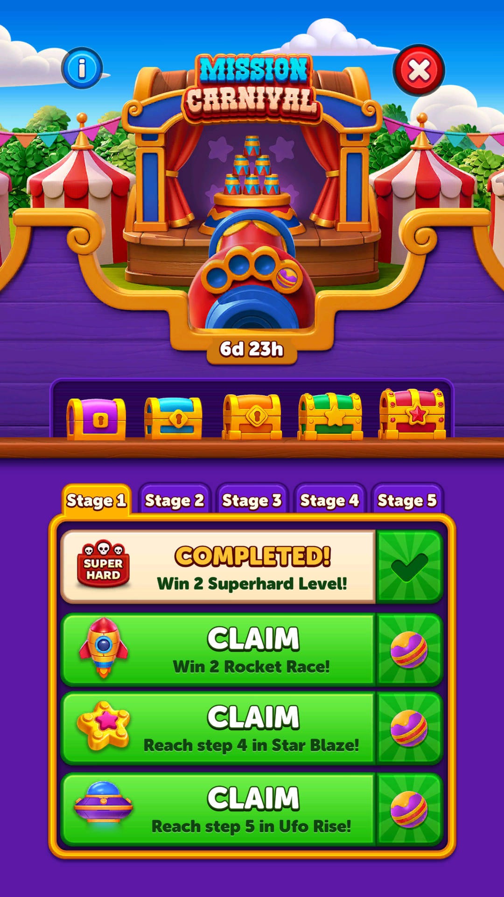
MagicLab · ảnh 03
Trạng thái bằng chứng: OFFLINE FIXTURE — ép mở cục bộ trên LDPlayer. Setup của ảnh: lab-ready.
Quan sát: Sau khi nhận đủ bốn nhiệm vụ của Stage 1, game chuyển phần nhiệm vụ sang Stage 2; rương Stage 1 xuất hiện nút Claim. Việc hoàn tất nhiệm vụ và việc nhận rương được thể hiện thành hai bước riêng.
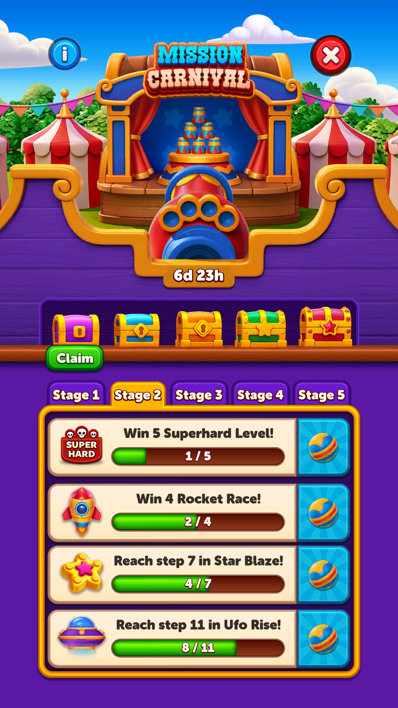
MagicLab · ảnh 04
Trạng thái bằng chứng: OFFLINE FIXTURE — ép mở cục bộ trên LDPlayer. Setup của ảnh: lab-ready.
Quan sát: Popup thưởng rương Stage 1 hiển thị 1 giờ mạng vô hạn, Freeze ×1, Rocket ×1 và UFO ×1. Ảnh xác nhận nội dung popup; chưa xác minh phần thưởng đã được server cấp hoặc đồng bộ thành công.
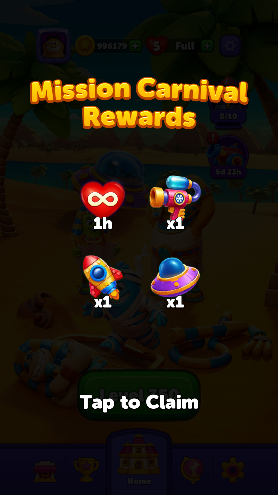
1 giờ mạng vô hạn, Freeze ×1, Rocket ×1 và UFO ×1. Ảnh xác nhận nội dung popup; chưa xác minh phần thưởng đã được server cấp hoặc đồng bộ thành công. Fixture: lab-ready.MagicLab · ảnh 05
Trạng thái bằng chứng: OFFLINE FIXTURE — ép mở cục bộ trên LDPlayer. Setup của ảnh: lab-final.
Quan sát: Trong fixture hoàn tất riêng, cả năm rương có dấu tích và bốn nhiệm vụ ở Stage 5 đều ghi COMPLETED. Đây không phải kết quả chơi nối tiếp toàn bộ năm stage từ chuỗi ảnh Stage 1 ở trên.

Rocket Race — thử nhánh cuối và giới hạn kết quả offline
Case BO-EVT-JetpackRace. Đối chiếu feature: JetpackRace. Bằng chứng: 1 ảnh được chọn.
JetpackRace · Setup — trạng thái được chuẩn bị
Fixture jetpack-final phục hồi cache cuộc đua có sẵn và chuẩn bị nhánh cuối trong điều kiện game bị cô lập mạng. Cache là dữ liệu kiểm thử đã có, không phải kết quả đua live phát sinh trong lần chụp.
Các fixture được ghi cho nhóm ảnh này:
- jetpack-final
Fixture là tiền điều kiện kiểm thử được gán cục bộ. Nếu có nhiều fixture, chúng là các lần chuẩn bị riêng; không gộp thành một phiên chơi tự nhiên liên tục.
JetpackRace · Trigger / thao tác và chuyển trạng thái được ghi nhận
Thử mở trạng thái kết quả cuối từ cache đã chuẩn bị và quan sát phản hồi của game.
Game hiển thị No Internet Connection khi mở nhánh cuối. Ảnh mới ghi nhận một đường vào bị chặn trong điều kiện offline; chưa chụp được popup chiến thắng hoặc trao thưởng cuối chạy thành công.
JetpackRace · Quan sát cần đối chiếu
Bảng dưới là danh mục điểm quan sát theo thứ tự ảnh trong manifest. Chỉ câu nào ghi rõ thao tác trước/sau mới biểu thị một chuyển trạng thái đã thực hiện.
| Ảnh | Kết quả được ghi nhận |
|---|---|
| JetpackRace 01 | Thử mở kết quả Rocket Race từ cache đã ép sang nhánh cuối trong điều kiện cô lập mạng: game hiện No Internet Connection. Đây là ảnh giới hạn đã quan sát, chưa phải màn chiến thắng hay trao thưởng cuối. |

JetpackRace · Giới hạn kết luận của case
Chưa có bằng chứng nhánh thưởng cuối có thể hoàn tất offline. Đối chiếu native cho thấy luồng Jetpack có điều kiện IsSynced; đây là giới hạn cần đọc cùng ảnh lỗi mạng, không phải bằng chứng rằng chỉ sửa một cờ sẽ tái hiện chính xác luồng server. Không chuyển ca bị chặn này thành ca thắng hoặc đã nhận thưởng.
JetpackRace · Ảnh minh họa và fixture từng ảnh
JetpackRace · ảnh 01
Trạng thái bằng chứng: OFFLINE FIXTURE — ép mở cục bộ trên LDPlayer. Setup của ảnh: jetpack-final.
Quan sát: Thử mở kết quả Rocket Race từ cache đã ép sang nhánh cuối trong điều kiện cô lập mạng: game hiện No Internet Connection. Đây là ảnh giới hạn đã quan sát, chưa phải màn chiến thắng hay trao thưởng cuối.
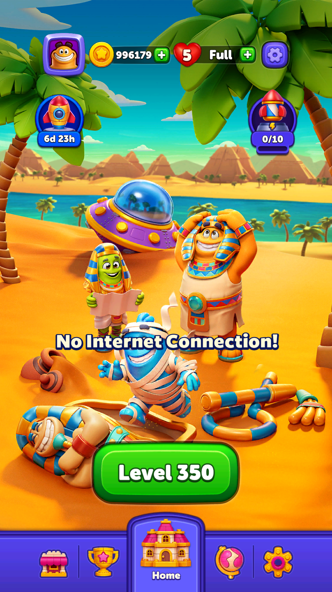
Lily Leap — nhánh thắng 5/5, chia giải và thất bại
Case BO-EVT-SkyJump. Đối chiếu feature: SkyJump. Bằng chứng: 4 ảnh được chọn.
SkyJump · Setup — trạng thái được chuẩn bị
Fixture sky-win dùng cache lịch sử của cùng bản khảo sát và đặt score = 5 tại Stage 1. Fixture sky-fall riêng đặt score = −1, với mốc nhìn thấy trước đó là 4. Số người tham gia và kết quả được lấy từ cache/fixture.
Các fixture được ghi cho nhóm ảnh này:
- sky-win; cache lịch sử, score5; thao tác nhận thực trong app
- sky-fall; score=-1, mốc nhìn thấy trước4
Fixture là tiền điều kiện kiểm thử được gán cục bộ. Nếu có nhiều fixture, chúng là các lần chuẩn bị riêng; không gộp thành một phiên chơi tự nhiên liên tục.
SkyJump · Trigger / thao tác và chuyển trạng thái được ghi nhận
Mở nhánh thắng, bấm tiếp từ Congratulations tới popup thưởng và đối chiếu snapshot coin. Với fixture thất bại riêng, quan sát nhánh You failed the challenge mà game tự mở.
Ở sky-win, game dựng bàn Stage 1/3 với Level 5/5 rồi mở Congratulations: quỹ thưởng 5.000 coin, phần người chơi 185 coin và 26 người thắng khác, tức 27 người theo kết quả đang cache. Bấm tiếp mở Lily Leap Rewards với 185 coin và vẫn còn Tap to Claim. Snapshot lúc này giữ nguyên 996.179 coin. Ở sky-fall, game hiển thị You failed the challenge và Tap to Continue, cho phép đối chiếu hai nhánh kết quả.
SkyJump · Quan sát cần đối chiếu
Bảng dưới là danh mục điểm quan sát theo thứ tự ảnh trong manifest. Chỉ câu nào ghi rõ thao tác trước/sau mới biểu thị một chuyển trạng thái đã thực hiện.
| Ảnh | Kết quả được ghi nhận |
|---|---|
| SkyJump 01 | Bàn Lily Leap hiển thị Stage 1/3, Level 5/5 và Tap to Claim trong quá trình chuyển sang nhánh hoàn tất. Tiến độ 5/5 đến từ fixture; không có năm màn thắng thực được thực hiện trong phiên chụp này. |
| SkyJump 02 | Popup Congratulations hiển thị Grand Prize 5.000 coin và You win 185; người chơi chia giải với 26 người thắng khác, tức tổng cộng 27 người theo kết quả đang cache. Đây là số liệu của fixture, không phải kết quả một cuộc đua live hiện tại. |
| SkyJump 03 | Sau khi bấm tiếp trên Congratulations, game mở popup Lily Leap Rewards với 185 coin và vẫn còn Tap to Claim. Snapshot tại thời điểm này ghi 996.179 coin, chưa tăng so với đầu fixture; chưa thể kết luận 185 coin đã được cộng vào kho. |
| SkyJump 04 | Với fixture thất bại có score = −1, game tự mở nhánh You failed the challenge và Tap to Continue. Ảnh cho phép đối chiếu cách trình bày nhánh thua với nhánh thắng 5/5; hai nhánh dùng hai lần chuẩn bị trạng thái riêng. |


SkyJump · Giới hạn kết luận của case
Số người và kết quả xuất phát từ cache, không phải cuộc đua live trong ngày chụp. Đã quan sát popup thưởng nhưng chưa xác nhận 185 coin cộng vào kho; còn bước Tap to Claim ở ảnh cuối nhánh thắng. Khung bàn trước kết toán có animation cập nhật số người. Hai nhánh thắng/thua sử dụng hai fixture độc lập.
SkyJump · Ảnh minh họa và fixture từng ảnh
SkyJump · ảnh 01
Trạng thái bằng chứng: OFFLINE FIXTURE — ép mở cục bộ trên LDPlayer. Setup của ảnh: sky-win; cache lịch sử, score5; thao tác nhận thực trong app.
Quan sát: Bàn Lily Leap hiển thị Stage 1/3, Level 5/5 và Tap to Claim trong quá trình chuyển sang nhánh hoàn tất. Tiến độ 5/5 đến từ fixture; không có năm màn thắng thực được thực hiện trong phiên chụp này.

SkyJump · ảnh 02
Trạng thái bằng chứng: OFFLINE FIXTURE — ép mở cục bộ trên LDPlayer. Setup của ảnh: sky-win; cache lịch sử, score5; thao tác nhận thực trong app.
Quan sát: Popup Congratulations hiển thị Grand Prize 5.000 coin và You win 185; người chơi chia giải với 26 người thắng khác, tức tổng cộng 27 người theo kết quả đang cache. Đây là số liệu của fixture, không phải kết quả một cuộc đua live hiện tại.
 5.000 coin và You win 185; người chơi chia giải với 26 người thắng khác, tức tổng cộng 27 người theo kết quả đang cache. Đây là số liệu của fixture, không phải kết quả một cuộc đua live hiện tại. Fixture: sky-win; cache lịch sử, score5; thao tác nhận thực trong app.
5.000 coin và You win 185; người chơi chia giải với 26 người thắng khác, tức tổng cộng 27 người theo kết quả đang cache. Đây là số liệu của fixture, không phải kết quả một cuộc đua live hiện tại. Fixture: sky-win; cache lịch sử, score5; thao tác nhận thực trong app.SkyJump · ảnh 03
Trạng thái bằng chứng: OFFLINE FIXTURE — ép mở cục bộ trên LDPlayer. Setup của ảnh: sky-win; cache lịch sử, score5; thao tác nhận thực trong app.
Quan sát: Sau khi bấm tiếp trên Congratulations, game mở popup Lily Leap Rewards với 185 coin và vẫn còn Tap to Claim. Snapshot tại thời điểm này ghi 996.179 coin, chưa tăng so với đầu fixture; chưa thể kết luận 185 coin đã được cộng vào kho.
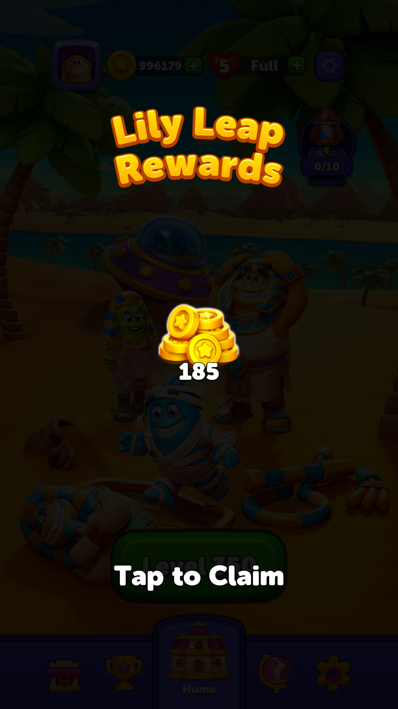
185 coin và vẫn còn Tap to Claim. Snapshot tại thời điểm này ghi 996.179 coin, chưa tăng so với đầu fixture; chưa thể kết luận 185 coin đã được cộng vào kho. Fixture: sky-win; cache lịch sử, score5; thao tác nhận thực trong app.SkyJump · ảnh 04
Trạng thái bằng chứng: OFFLINE FIXTURE — ép mở cục bộ trên LDPlayer. Setup của ảnh: sky-fall; score=-1, mốc nhìn thấy trước4.
Quan sát: Với fixture thất bại có score = −1, game tự mở nhánh You failed the challenge và Tap to Continue. Ảnh cho phép đối chiếu cách trình bày nhánh thua với nhánh thắng 5/5; hai nhánh dùng hai lần chuẩn bị trạng thái riêng.
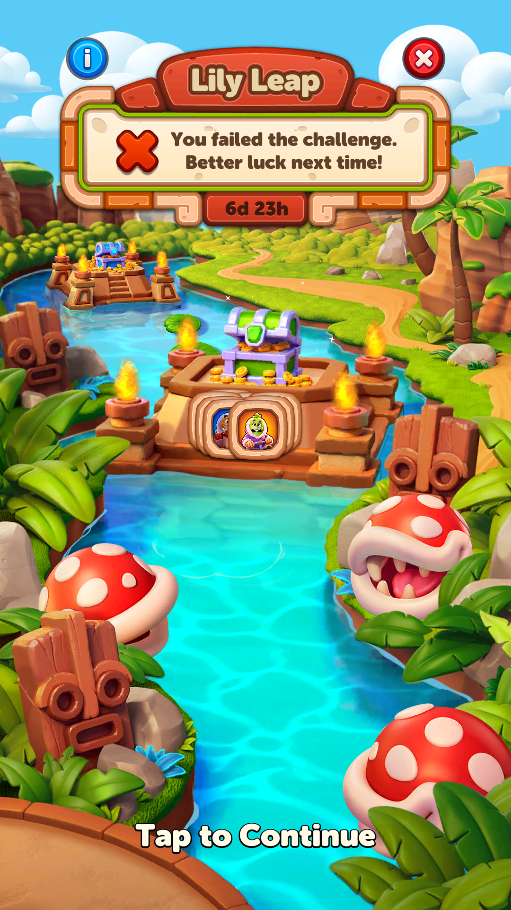
UFO Rise — đỉnh 120, thưởng cuối và checkpoint
Case BO-EVT-UfoRise. Đối chiếu feature: UfoRise. Bằng chứng: 3 ảnh được chọn.
UfoRise · Setup — trạng thái được chuẩn bị
Fixture ufo-final gán tiến độ 120, mốc nhìn thấy trước đó là 119 và chỉ số đã nhận là 9 để phần thưởng cuối còn chờ. Fixture ufo-fall riêng đặt trạng thái rơi từ tiến độ 76 về checkpoint 46.
Các fixture được ghi cho nhóm ảnh này:
- ufo-final;120wins,lastSeen119,maxClaimedStepIndex9
- ufo-final; tooltip sau nhận cục bộ
- ufo-fall
Fixture là tiền điều kiện kiểm thử được gán cục bộ. Nếu có nhiều fixture, chúng là các lần chuẩn bị riêng; không gộp thành một phiên chơi tự nhiên liên tục.
UfoRise · Trigger / thao tác và chuyển trạng thái được ghi nhận
Mở trạng thái ở đỉnh 120, quan sát hiệu ứng nhận rương, xem tooltip phần thưởng và đối chiếu snapshot cục bộ. Sau đó mở fixture sau rơi để xem vị trí giữ lại và các mốc còn khóa.
Game tự mở tháp ở bậc 120, chạy hiệu ứng nhận rương và đánh dấu tích. Tooltip cuối liệt kê 1.200 coin, Rocket ×1, Freeze ×1, UFO ×1 và 1 giờ mạng vô hạn. Snapshot sau hiển thị ghi coin cục bộ 996.179 → 997.379, khớp mức tăng 1.200; chỉ số mốc đã nhận đổi 9 → 10. Trong fixture sau rơi, UFO đứng tại checkpoint 46 đã nhận thưởng, còn các mốc 77 và 120 vẫn đóng.
UfoRise · Quan sát cần đối chiếu
Bảng dưới là danh mục điểm quan sát theo thứ tự ảnh trong manifest. Chỉ câu nào ghi rõ thao tác trước/sau mới biểu thị một chuyển trạng thái đã thực hiện.
| Ảnh | Kết quả được ghi nhận |
|---|---|
| UfoRise 01 | UFO Rise ở bậc 120: rương cuối và mốc 77 đều có dấu tích; giao diện hiện Continue. Tiến độ được gán bằng fixture, còn hiệu ứng nhận và thay đổi trạng thái hiển thị do game xử lý khi mở. |
| UfoRise 02 | Tooltip của rương bậc 120 liệt kê 1.200 coin, Rocket ×1, Freeze ×1, UFO ×1 và 1 giờ mạng vô hạn. Snapshot riêng ghi coin cục bộ tăng 996.179 → 997.379 và chỉ số mốc đã nhận tăng 9 → 10; đây là phần thưởng được cộng cục bộ trong fixture. |
| UfoRise 03 | Fixture sau khi rơi từ tiến độ 76 về checkpoint 46: UFO đứng tại mốc 46 đã nhận thưởng; các mốc 77 và 120 vẫn đóng. Ảnh chụp trạng thái sau rơi, không ghi lại animation thất bại và không đại diện cho 76 ván đã chơi trong phiên. |


UfoRise · Giới hạn kết luận của case
Đã có bằng chứng cộng 1.200 coin cục bộ trong fixture, chưa xác minh đồng bộ hoặc cấp thưởng từ server. Tiến độ 120 và nhánh rơi 76 → 46 đều được chuẩn bị, không phải 120 hoặc 76 màn đã chơi trong phiên. Ảnh checkpoint ghi trạng thái sau rơi, không chụp animation thất bại.
UfoRise · Ảnh minh họa và fixture từng ảnh
UfoRise · ảnh 01
Trạng thái bằng chứng: OFFLINE FIXTURE — ép mở cục bộ trên LDPlayer. Setup của ảnh: ufo-final;120wins,lastSeen119,maxClaimedStepIndex9.
Quan sát: UFO Rise ở bậc 120: rương cuối và mốc 77 đều có dấu tích; giao diện hiện Continue. Tiến độ được gán bằng fixture, còn hiệu ứng nhận và thay đổi trạng thái hiển thị do game xử lý khi mở.
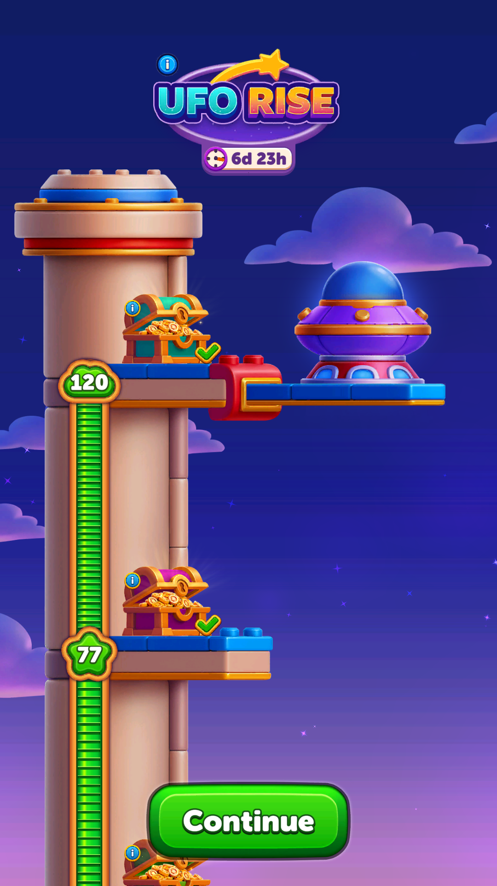
UfoRise · ảnh 02
Trạng thái bằng chứng: OFFLINE FIXTURE — ép mở cục bộ trên LDPlayer. Setup của ảnh: ufo-final; tooltip sau nhận cục bộ.
Quan sát: Tooltip của rương bậc 120 liệt kê 1.200 coin, Rocket ×1, Freeze ×1, UFO ×1 và 1 giờ mạng vô hạn. Snapshot riêng ghi coin cục bộ tăng 996.179 → 997.379 và chỉ số mốc đã nhận tăng 9 → 10; đây là phần thưởng được cộng cục bộ trong fixture.
 1.200 coin, Rocket ×1, Freeze ×1, UFO ×1 và 1 giờ mạng vô hạn. Snapshot riêng ghi coin cục bộ tăng 996.179 → 997.379 và chỉ số mốc đã nhận tăng 9 → 10; đây là phần thưởng được cộng cục bộ trong fixture. Fixture: ufo-final; tooltip sau nhận cục bộ.
1.200 coin, Rocket ×1, Freeze ×1, UFO ×1 và 1 giờ mạng vô hạn. Snapshot riêng ghi coin cục bộ tăng 996.179 → 997.379 và chỉ số mốc đã nhận tăng 9 → 10; đây là phần thưởng được cộng cục bộ trong fixture. Fixture: ufo-final; tooltip sau nhận cục bộ.UfoRise · ảnh 03
Trạng thái bằng chứng: OFFLINE FIXTURE — ép mở cục bộ trên LDPlayer. Setup của ảnh: ufo-fall.
Quan sát: Fixture sau khi rơi từ tiến độ 76 về checkpoint 46: UFO đứng tại mốc 46 đã nhận thưởng; các mốc 77 và 120 vẫn đóng. Ảnh chụp trạng thái sau rơi, không ghi lại animation thất bại và không đại diện cho 76 ván đã chơi trong phiên.
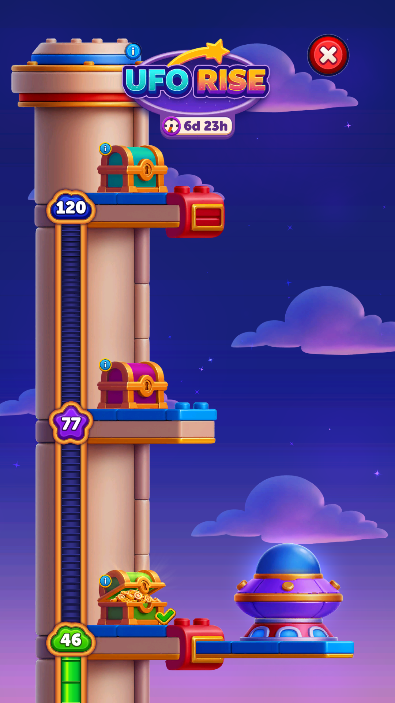
Star Blaze — trước mốc cuối và trạng thái hoàn thành
Case BO-EVT-GAE. Đối chiếu feature: GAE. Bằng chứng: 3 ảnh được chọn.
GAE · Setup — trạng thái được chuẩn bị
Hai fixture riêng phục vụ đối chiếu: gae-near-final có tổng 21.711 điểm, còn gae-final có tổng 21.811 điểm. Đây là tổng điểm sự kiện; banner chỉ hiện tiến độ của bậc đang xét.
Các fixture được ghi cho nhóm ảnh này:
- gae-final
- gae-near-final
Fixture là tiền điều kiện kiểm thử được gán cục bộ. Nếu có nhiều fixture, chúng là các lần chuẩn bị riêng; không gộp thành một phiên chơi tự nhiên liên tục.
GAE · Trigger / thao tác và chuyển trạng thái được ghi nhận
Mở Home ở fixture gần hoàn tất, chạm banner để xem bảng thưởng, rồi đối chiếu với Home ở fixture đạt ngưỡng cuối. Thử chạm banner Completed! để kiểm tra phản hồi tại trạng thái kết thúc.
Với tổng 21.711 điểm, Home hiển thị 6.700/6.800 ở bậc cuối, hệ số ×100 và phần thưởng kế tiếp 2.000 coin. Bảng thưởng cho thấy Final Reward bậc 25 còn khóa; bậc 24 với 2 giờ mạng vô hạn và bậc 23 với UFO ×1 đã có dấu tích. Với tổng 21.811 điểm, banner đổi sang Completed! / Finished. Chênh lệch giữa hai fixture là 100 điểm, tương ứng phần thiếu 6.800 − 6.700; không được đọc 6.800 là tổng mục tiêu của cả sự kiện. Chạm banner hoàn tất không mở thêm popup trong lần thử.
GAE · Quan sát cần đối chiếu
Bảng dưới là danh mục điểm quan sát theo thứ tự ảnh trong manifest. Chỉ câu nào ghi rõ thao tác trước/sau mới biểu thị một chuyển trạng thái đã thực hiện.
| Ảnh | Kết quả được ghi nhận |
|---|---|
| GAE 01 | Với tổng điểm được gán là 21.811, banner Star Blaze trên Home chuyển sang Completed! / Finished và có dấu tích. Chạm banner không mở thêm popup trong lần thử này; ảnh chưa chứng minh phần thưởng cuối đã được cộng vào kho. |
| GAE 02 | Ở fixture tổng 21.711 điểm, banner hiển thị tiến độ riêng của bậc cuối là 6.700/6.800, hệ số ×100 và phần thưởng kế tiếp 2.000 coin. Cần phân biệt tổng điểm sự kiện với tiến độ đang hiển thị của riêng bậc cuối. |
| GAE 03 | Chạm banner mở bảng thưởng Star Blaze: bậc 25 ghi Final Reward 2.000 coin và còn khóa; bậc 24 với 2 giờ mạng vô hạn, cùng bậc 23 với UFO ×1, đã có dấu tích. Đây là trạng thái gần hoàn tất ở fixture 21.711 điểm. |


GAE · Giới hạn kết luận của case
Hai mốc điểm được gán bằng hai fixture, chưa quan sát một màn chơi tự nhiên kiếm 100 điểm cuối. Ảnh Completed! xác nhận trạng thái kết thúc trên UI, chưa chứng minh 2.000 coin thưởng cuối được cộng vào kho hoặc đồng bộ với server. Hệ số ×100 là giá trị nhìn thấy tại fixture gần hoàn tất, không tự chứng minh công thức thưởng cho mọi loại màn.
GAE · Ảnh minh họa và fixture từng ảnh
GAE · ảnh 01
Trạng thái bằng chứng: OFFLINE FIXTURE — ép mở cục bộ trên LDPlayer. Setup của ảnh: gae-final.
Quan sát: Với tổng điểm được gán là 21.811, banner Star Blaze trên Home chuyển sang Completed! / Finished và có dấu tích. Chạm banner không mở thêm popup trong lần thử này; ảnh chưa chứng minh phần thưởng cuối đã được cộng vào kho.

GAE · ảnh 02
Trạng thái bằng chứng: OFFLINE FIXTURE — ép mở cục bộ trên LDPlayer. Setup của ảnh: gae-near-final.
Quan sát: Ở fixture tổng 21.711 điểm, banner hiển thị tiến độ riêng của bậc cuối là 6.700/6.800, hệ số ×100 và phần thưởng kế tiếp 2.000 coin. Cần phân biệt tổng điểm sự kiện với tiến độ đang hiển thị của riêng bậc cuối.
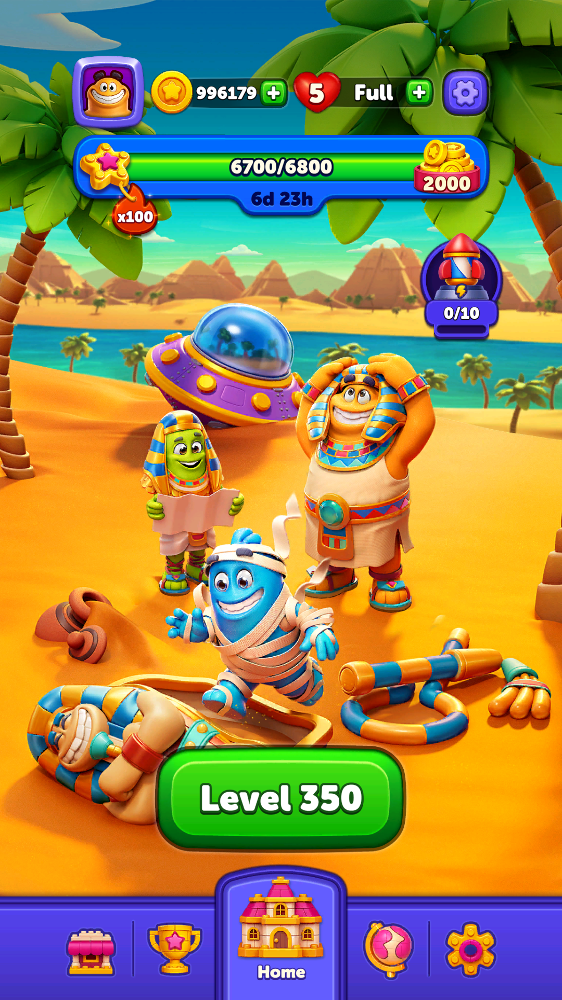
2.000 coin. Cần phân biệt tổng điểm sự kiện với tiến độ đang hiển thị của riêng bậc cuối. Fixture: gae-near-final.GAE · ảnh 03
Trạng thái bằng chứng: OFFLINE FIXTURE — ép mở cục bộ trên LDPlayer. Setup của ảnh: gae-near-final.
Quan sát: Chạm banner mở bảng thưởng Star Blaze: bậc 25 ghi Final Reward 2.000 coin và còn khóa; bậc 24 với 2 giờ mạng vô hạn, cùng bậc 23 với UFO ×1, đã có dấu tích. Đây là trạng thái gần hoàn tất ở fixture 21.711 điểm.
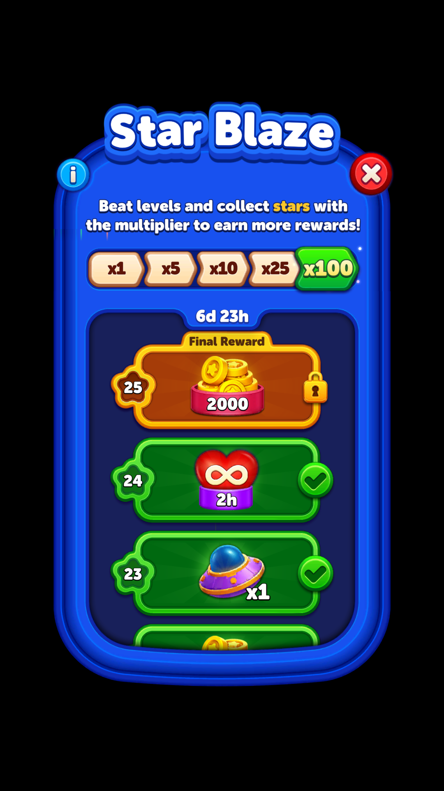
2.000 coin và còn khóa; bậc 24 với 2 giờ mạng vô hạn, cùng bậc 23 với UFO ×1, đã có dấu tích. Đây là trạng thái gần hoàn tất ở fixture 21.711 điểm. Fixture: gae-near-final.Block Pass — premium, nhận từng bậc và Bonus Vault
Case BO-EVT-BlockPass. Đối chiếu feature: BlockPass. Bằng chứng: 4 ảnh được chọn.
BlockPass · Setup — trạng thái được chuẩn bị
Fixture pass-premium bật trạng thái premium cục bộ để xem Activated, giới hạn  8 mạng và các phần thưởng khả dụng. Fixture pass-vault riêng có 1.054 chìa và đặt 31 bậc dữ liệu (bậc 0–30) vào trạng thái đã nhận; tổng ngưỡng của các bậc là 1.014 chìa.
8 mạng và các phần thưởng khả dụng. Fixture pass-vault riêng có 1.054 chìa và đặt 31 bậc dữ liệu (bậc 0–30) vào trạng thái đã nhận; tổng ngưỡng của các bậc là 1.014 chìa.
Các fixture được ghi cho nhóm ảnh này:
- pass-premium
- pass-vault
Fixture là tiền điều kiện kiểm thử được gán cục bộ. Nếu có nhiều fixture, chúng là các lần chuẩn bị riêng; không gộp thành một phiên chơi tự nhiên liên tục.
BlockPass · Trigger / thao tác và chuyển trạng thái được ghi nhận
Trong pass-premium, mở đường thưởng rồi bấm Claim 100 coin ở nhánh premium bậc 3; đối chiếu dấu tích và snapshot sau thao tác. Với pass-vault, mở phần cuối đường thưởng để xem cách game biểu diễn chìa dư và điều kiện nhận Vault.
Home hiển thị 8 mạng Full và huy hiệu 5 trên icon Block Pass. Bảng thưởng ghi Activated, tiến độ 9/10 tới bậc 4; UFO bậc 2 và 100 coin bậc 3 có thể nhận, còn bậc 4 vẫn khóa. Sau Claim 100 coin bậc 3, snapshot pass-paid-after ghi currency type 1 tăng từ 996.179 lên 996.279 và claimedPaidSteps = [3], xác nhận đã cộng 100 coin cục bộ. Ở fixture Vault, 1.054 − 1.014 = 40 chìa dư; mức 20 chìa đổi 100 coin tạo 200 coin, khớp thanh 200/5.000 và chu kỳ tiếp theo 0/20 trên UI. Vault ghi chỉ nhận coin khi sự kiện kết thúc.
BlockPass · Quan sát cần đối chiếu
Bảng dưới là danh mục điểm quan sát theo thứ tự ảnh trong manifest. Chỉ câu nào ghi rõ thao tác trước/sau mới biểu thị một chuyển trạng thái đã thực hiện.
| Ảnh | Kết quả được ghi nhận |
|---|---|
| BlockPass 01 | Sau khi kích hoạt premium bằng fixture, Home hiển thị 8 mạng Full thay mức 5; icon Block Pass có huy hiệu 5 phần thưởng khả dụng. Không thực hiện thanh toán IAP để tạo trạng thái này. |
| BlockPass 02 | Block Pass hiển thị Activated và thanh tiến độ 9/10 tới bậc 4. Nhánh premium có nút Claim cho UFO ×1 ở bậc 2 và 100 coin ở bậc 3; bậc 4 vẫn bị khóa theo tiến độ. Kích hoạt premium không tự mở mọi bậc thưởng. |
| BlockPass 03 | Sau khi bấm Claim 100 coin ở nhánh premium bậc 3, nút đổi thành dấu tích. Snapshot pass-paid-after ghi coin 996.179 → 996.279 và claimedPaidSteps = [3], xác nhận đã cộng 100 coin cục bộ; chưa xác minh server grant. |
| BlockPass 04 | Fixture có 1.054 chìa và đã nhận toàn bộ 31 bậc dữ liệu (bậc 0–30). Trừ ngưỡng 1.014 chìa còn 40 chìa dư: theo mức 20 chìa đổi 100 coin, Bonus Vault hiển thị 200/5.000 coin và thanh tiếp theo 0/20. UI ghi chỉ nhận coin trong Vault khi sự kiện kết thúc. |


BlockPass · Giới hạn kết luận của case
Premium là trạng thái gán cục bộ; không mua IAP. Dấu tích bậc 3 có snapshot xác nhận cộng 100 coin cục bộ, chưa chứng minh server cấp hoặc đồng bộ. Trạng thái đã nhận 31 bậc và 1.054 chìa thuộc fixture riêng, không phải thành tích chơi trong phiên. Số 200/5.000 là số coin đang thể hiện trong Vault; chưa kiểm thử nhận Vault lúc hết hạn.
BlockPass · Ảnh minh họa và fixture từng ảnh
BlockPass · ảnh 01
Trạng thái bằng chứng: OFFLINE FIXTURE — ép mở cục bộ trên LDPlayer. Setup của ảnh: pass-premium.
Quan sát: Sau khi kích hoạt premium bằng fixture, Home hiển thị 8 mạng Full thay mức 5; icon Block Pass có huy hiệu 5 phần thưởng khả dụng. Không thực hiện thanh toán IAP để tạo trạng thái này.
 8 mạng Full thay mức 5; icon Block Pass có huy hiệu 5 phần thưởng khả dụng. Không thực hiện thanh toán IAP để tạo trạng thái này. Fixture: pass-premium.
8 mạng Full thay mức 5; icon Block Pass có huy hiệu 5 phần thưởng khả dụng. Không thực hiện thanh toán IAP để tạo trạng thái này. Fixture: pass-premium.BlockPass · ảnh 02
Trạng thái bằng chứng: OFFLINE FIXTURE — ép mở cục bộ trên LDPlayer. Setup của ảnh: pass-premium.
Quan sát: Block Pass hiển thị Activated và thanh tiến độ 9/10 tới bậc 4. Nhánh premium có nút Claim cho UFO ×1 ở bậc 2 và 100 coin ở bậc 3; bậc 4 vẫn bị khóa theo tiến độ. Kích hoạt premium không tự mở mọi bậc thưởng.
 UFO ×1 ở bậc 2 và 100 coin ở bậc 3; bậc 4 vẫn bị khóa theo tiến độ. Kích hoạt premium không tự mở mọi bậc thưởng. Fixture: pass-premium.
UFO ×1 ở bậc 2 và 100 coin ở bậc 3; bậc 4 vẫn bị khóa theo tiến độ. Kích hoạt premium không tự mở mọi bậc thưởng. Fixture: pass-premium.BlockPass · ảnh 03
Trạng thái bằng chứng: OFFLINE FIXTURE — ép mở cục bộ trên LDPlayer. Setup của ảnh: pass-premium.
Quan sát: Sau khi bấm Claim 100 coin ở nhánh premium bậc 3, nút đổi thành dấu tích. Snapshot pass-paid-after ghi coin 996.179 → 996.279 và claimedPaidSteps = [3], xác nhận đã cộng 100 coin cục bộ; chưa xác minh server grant.
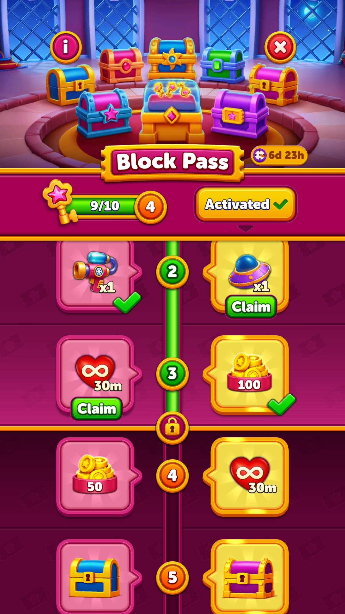
100 coin ở nhánh premium bậc 3, nút đổi thành dấu tích. Snapshot pass-paid-after ghi coin 996.179 → 996.279 và claimedPaidSteps = (3), xác nhận đã cộng 100 coin cục bộ; chưa xác minh server grant. Fixture: pass-premium.BlockPass · ảnh 04
Trạng thái bằng chứng: OFFLINE FIXTURE — ép mở cục bộ trên LDPlayer. Setup của ảnh: pass-vault.
Quan sát: Fixture có 1.054 chìa và đã nhận toàn bộ 31 bậc dữ liệu (bậc 0–30). Trừ ngưỡng 1.014 chìa còn 40 chìa dư: theo mức 20 chìa đổi 100 coin, Bonus Vault hiển thị 200/5.000 coin và thanh tiếp theo 0/20. UI ghi chỉ nhận coin trong Vault khi sự kiện kết thúc.
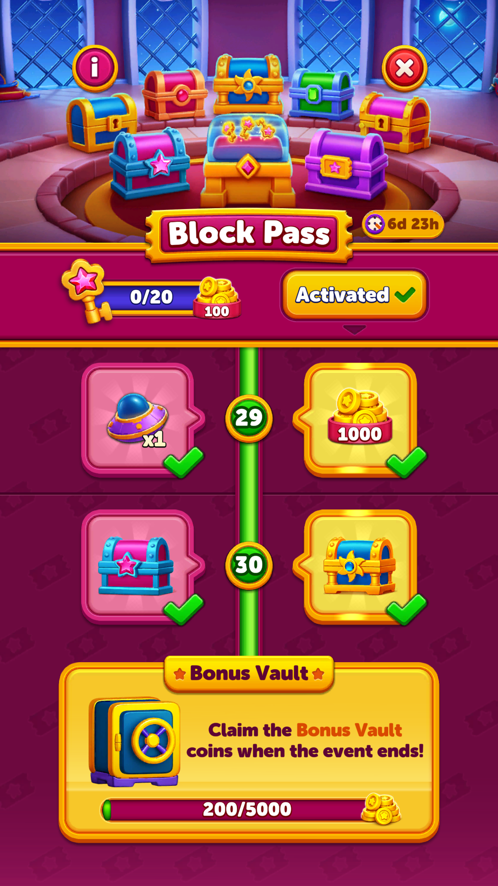
100 coin, Bonus Vault hiển thị 200/5.000 coin và thanh tiếp theo 0/20. UI ghi chỉ nhận coin trong Vault khi sự kiện kết thúc. Fixture: pass-vault.Nature Collection — từ đổi sao đến hoàn tất và mở Grand Collection
Case BO-EVT-Collection. Đối chiếu feature: Collection. Bằng chứng: 13 ảnh được chọn.
Collection · Setup — trạng thái được chuẩn bị
Fixture collection-stars đặt số sao từ thẻ trùng là 500. Trạng thái album và các thẻ đang sở hữu được chuẩn bị cục bộ để xem lựa chọn đổi rương và phân biệt thẻ mới với thẻ đã có. Fixture collection-set đặt Forest đủ 9 thẻ; fixture collection-full đặt toàn bộ 135 thẻ, album thường chưa nhận giải cuối.
Các fixture được ghi cho nhóm ảnh này:
- collection-stars
- collection-set
- collection-full
Fixture là tiền điều kiện kiểm thử được gán cục bộ. Nếu có nhiều fixture, chúng là các lần chuẩn bị riêng; không gộp thành một phiên chơi tự nhiên liên tục.
Collection · Trigger / thao tác và chuyển trạng thái được ghi nhận
Mở Bonus Chest, chọn mức đổi 500 sao, bấm Tap to Claim và theo dõi chuỗi mở gói thẻ qua các màn Your Cards. Với fixture đủ album: bấm qua Theme Completed, nhận thưởng các bộ, Tap to open rương album, Tap to Continue, Equip rồi vào lại Collection.
Cả ba mức đổi 100, 250 và 500 sao đều hiện nút khả dụng khi có 500 sao. Chọn mức 500 mở Congratulations với UFO ×1 và ba gói thẻ. Sau Tap to Claim, một màn Your Cards hiển thị Coconut 5 sao, Wildflowers 3 sao và Roots 1 sao mang nhãn New; Bromeliad 2 sao không có nhãn New. Chuyển tiếp dẫn tới animation gói màu hồng trước lượt mở kế tiếp. Chuỗi ảnh cho thấy phần thưởng rương được trình bày trước khi từng gói thẻ được mở. Fixture Forest đủ 9 thẻ mở Completed. Fixture đủ 135 thẻ chạy chuỗi hoàn tất bộ, gom thưởng 2.700 coin, mở rương toàn album 10.000 coin và Acorn Token. Sau Equip, album chuyển Grand Nature Collection 0/135 với giải 15.000 coin và booster x8.
Collection · Quan sát cần đối chiếu
Bảng dưới là danh mục điểm quan sát theo thứ tự ảnh trong manifest. Chỉ câu nào ghi rõ thao tác trước/sau mới biểu thị một chuyển trạng thái đã thực hiện.
| Ảnh | Kết quả được ghi nhận |
|---|---|
| Collection 01 | Với 500 sao từ thẻ trùng được gán trong fixture, cả ba mức đổi Bonus Chest — 100, 250 và 500 sao — đều hiển thị nút khả dụng. Đây là ba lựa chọn sử dụng cùng số sao, không phải ba phần thưởng đã nhận. |
| Collection 02 | Sau khi chạm rương 500 sao, game dựng popup Congratulations gồm UFO ×1 và ba gói thẻ; phía dưới vẫn còn Tap to Claim. Ảnh này ghi nhận danh sách thưởng được trình bày trước bước tiếp theo. |
| Collection 03 | Sau Tap to Claim, màn Your Cards hiển thị Coconut 5 sao, Wildflowers 3 sao và Roots 1 sao có nhãn New; Bromeliad 2 sao không có nhãn New. Đây là kết quả của một lượt mở đã quan sát, không đủ để suy ra xác suất rơi thẻ. |
| Collection 04 | Chuyển tiếp từ màn Your Cards: game chạy animation gói thẻ màu hồng trước lượt mở kế tiếp. Ảnh này minh họa bước chuyển giữa các gói, chưa hiển thị kết quả thẻ của gói tiếp theo. |
| Collection 05 | Fixture đủ 9 thẻ Forest: album tăng 26/135, Forest đổi thanh tiến độ thành dấu tích; badge 9 thẻ chưa xem. |
| Collection 06 | Mở Forest: Completed, đủ 9 thẻ một sao và vị trí bộ 1/15. Các nhãn New do fixture đánh dấu thẻ chưa xem. |
| Collection 07 | Fixture đủ 135 thẻ: game lần lượt đưa các bộ vào chuỗi Theme Completed; ảnh minh họa bộ Desert. |
| Collection 08 | Sau chuỗi Theme Completed: popup gom thưởng các bộ, gồm sáu khoản coin 100/200/400/500/500/1.000, 1 giờ mạng và nhiều booster; còn Tap to Claim. |
| Collection 09 | Sau nhận phần thưởng các bộ: Nature Collection Completed! mở bước Tap to open của rương toàn album. Coin trên Home lúc này 998.879 (tăng 2.700 cục bộ từ thưởng các bộ). |
| Collection 10 | Rương toàn album: 10.000 coin, Rocket/Freeze/UFO mỗi loại x5 và Acorn Token; bước tiếp theo Tap to Continue. |
| Collection 11 | Sau mở rương: You got Acorn Token! và nút Equip cho hồ sơ người chơi. Đây là phần thưởng trang trí của album thường. |
| Collection 12 | Sau Equip: Acorn Token hiện cạnh avatar; coin 1.008.879, tăng 10.000 cục bộ so với 998.879 sau thưởng các bộ. |
| Collection 13 | Vào lại Collection sau nhận thưởng: Grand Nature Collection, reset 0/135, giải mới 15.000 coin, token tím và booster x8; thời gian sự kiện vẫn 6d23h. |


Collection · Giới hạn kết luận của case
Set và album đã hoàn tất trong fixture cục bộ; snapshot xác nhận chuyển sang isGoldCollectionActive=true. Không phải hành trình thu thập tự nhiên hoặc xác nhận server. Một chuỗi mở gói không đủ suy ra xác suất drop; số sao và kho thẻ đầu vào đã được gán để kiểm thử.
Collection · Ảnh minh họa và fixture từng ảnh
Collection · ảnh 01
Trạng thái bằng chứng: OFFLINE FIXTURE — ép mở cục bộ trên LDPlayer. Setup của ảnh: collection-stars.
Quan sát: Với 500 sao từ thẻ trùng được gán trong fixture, cả ba mức đổi Bonus Chest — 100, 250 và 500 sao — đều hiển thị nút khả dụng. Đây là ba lựa chọn sử dụng cùng số sao, không phải ba phần thưởng đã nhận.

Collection · ảnh 02
Trạng thái bằng chứng: OFFLINE FIXTURE — ép mở cục bộ trên LDPlayer. Setup của ảnh: collection-stars.
Quan sát: Sau khi chạm rương 500 sao, game dựng popup Congratulations gồm UFO ×1 và ba gói thẻ; phía dưới vẫn còn Tap to Claim. Ảnh này ghi nhận danh sách thưởng được trình bày trước bước tiếp theo.
 UFO ×1 và ba gói thẻ; phía dưới vẫn còn Tap to Claim. Ảnh này ghi nhận danh sách thưởng được trình bày trước bước tiếp theo. Fixture: collection-stars.
UFO ×1 và ba gói thẻ; phía dưới vẫn còn Tap to Claim. Ảnh này ghi nhận danh sách thưởng được trình bày trước bước tiếp theo. Fixture: collection-stars.Collection · ảnh 03
Trạng thái bằng chứng: OFFLINE FIXTURE — ép mở cục bộ trên LDPlayer. Setup của ảnh: collection-stars.
Quan sát: Sau Tap to Claim, màn Your Cards hiển thị Coconut 5 sao, Wildflowers 3 sao và Roots 1 sao có nhãn New; Bromeliad 2 sao không có nhãn New. Đây là kết quả của một lượt mở đã quan sát, không đủ để suy ra xác suất rơi thẻ.

Collection · ảnh 04
Trạng thái bằng chứng: OFFLINE FIXTURE — ép mở cục bộ trên LDPlayer. Setup của ảnh: collection-stars.
Quan sát: Chuyển tiếp từ màn Your Cards: game chạy animation gói thẻ màu hồng trước lượt mở kế tiếp. Ảnh này minh họa bước chuyển giữa các gói, chưa hiển thị kết quả thẻ của gói tiếp theo.

Collection · ảnh 05
Trạng thái bằng chứng: OFFLINE FIXTURE — ép mở cục bộ trên LDPlayer. Setup của ảnh: collection-set.
Quan sát: Fixture đủ 9 thẻ Forest: album tăng 26/135, Forest đổi thanh tiến độ thành dấu tích; badge 9 thẻ chưa xem.

Collection · ảnh 06
Trạng thái bằng chứng: OFFLINE FIXTURE — ép mở cục bộ trên LDPlayer. Setup của ảnh: collection-set.
Quan sát: Mở Forest: Completed, đủ 9 thẻ một sao và vị trí bộ 1/15. Các nhãn New do fixture đánh dấu thẻ chưa xem.
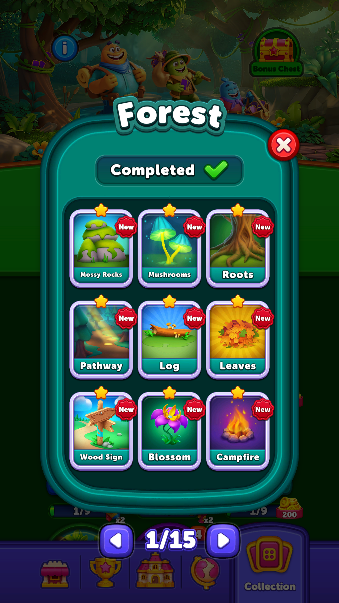
Collection · ảnh 07
Trạng thái bằng chứng: OFFLINE FIXTURE — ép mở cục bộ trên LDPlayer. Setup của ảnh: collection-full.
Quan sát: Fixture đủ 135 thẻ: game lần lượt đưa các bộ vào chuỗi Theme Completed; ảnh minh họa bộ Desert.
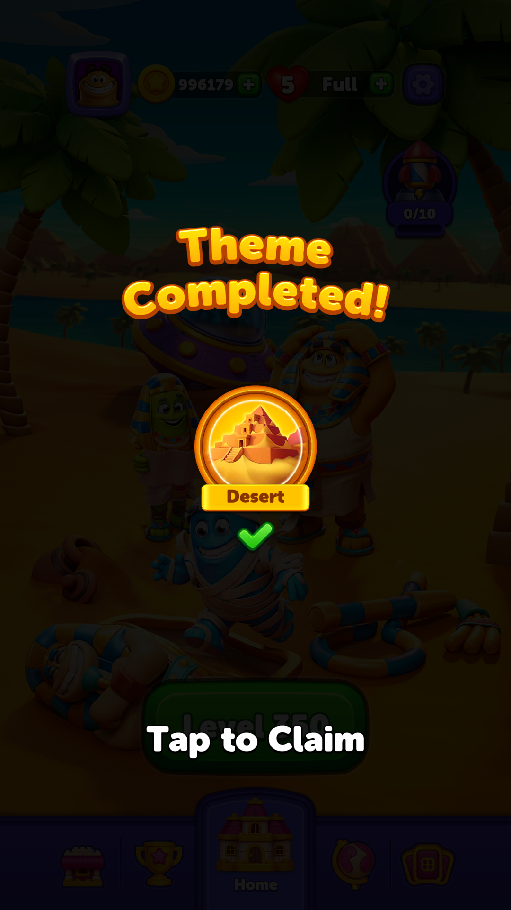
Collection · ảnh 08
Trạng thái bằng chứng: OFFLINE FIXTURE — ép mở cục bộ trên LDPlayer. Setup của ảnh: collection-full.
Quan sát: Sau chuỗi Theme Completed: popup gom thưởng các bộ, gồm sáu khoản coin 100/200/400/500/500/1.000, 1 giờ mạng và nhiều booster; còn Tap to Claim.
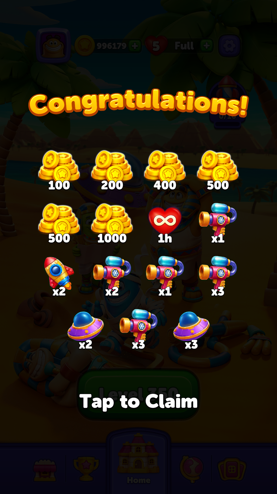
1 giờ mạng và nhiều booster; còn Tap to Claim. Fixture: collection-full.Collection · ảnh 09
Trạng thái bằng chứng: OFFLINE FIXTURE — ép mở cục bộ trên LDPlayer. Setup của ảnh: collection-full.
Quan sát: Sau nhận phần thưởng các bộ: Nature Collection Completed! mở bước Tap to open của rương toàn album. Coin trên Home lúc này 998.879 (tăng 2.700 cục bộ từ thưởng các bộ).
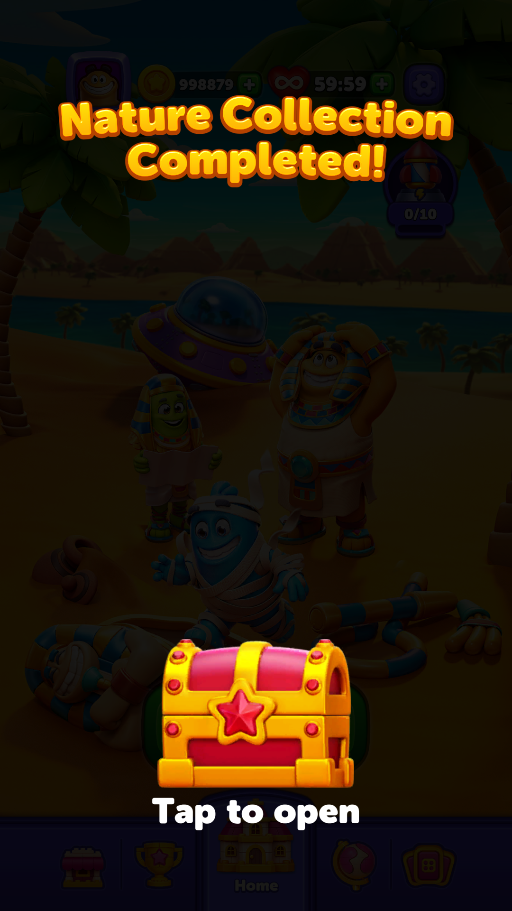
Collection · ảnh 10
Trạng thái bằng chứng: OFFLINE FIXTURE — ép mở cục bộ trên LDPlayer. Setup của ảnh: collection-full.
Quan sát: Rương toàn album: 10.000 coin, Rocket/Freeze/UFO mỗi loại x5 và Acorn Token; bước tiếp theo Tap to Continue.
 10.000 coin, Rocket/Freeze/UFO mỗi loại x5 và Acorn Token; bước tiếp theo Tap to Continue. Fixture: collection-full.
10.000 coin, Rocket/Freeze/UFO mỗi loại x5 và Acorn Token; bước tiếp theo Tap to Continue. Fixture: collection-full.Collection · ảnh 11
Trạng thái bằng chứng: OFFLINE FIXTURE — ép mở cục bộ trên LDPlayer. Setup của ảnh: collection-full.
Quan sát: Sau mở rương: You got Acorn Token! và nút Equip cho hồ sơ người chơi. Đây là phần thưởng trang trí của album thường.
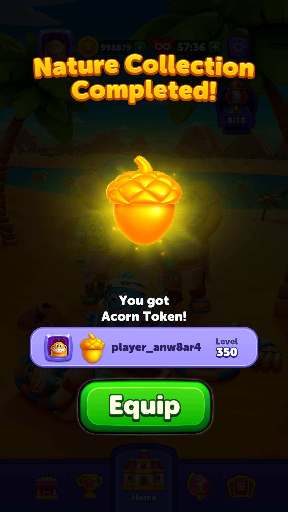
Collection · ảnh 12
Trạng thái bằng chứng: OFFLINE FIXTURE — ép mở cục bộ trên LDPlayer. Setup của ảnh: collection-full.
Quan sát: Sau Equip: Acorn Token hiện cạnh avatar; coin 1.008.879, tăng 10.000 cục bộ so với 998.879 sau thưởng các bộ.

Collection · ảnh 13
Trạng thái bằng chứng: OFFLINE FIXTURE — ép mở cục bộ trên LDPlayer. Setup của ảnh: collection-full.
Quan sát: Vào lại Collection sau nhận thưởng: Grand Nature Collection, reset 0/135, giải mới 15.000 coin, token tím và booster x8; thời gian sự kiện vẫn 6d23h.
 15.000 coin, token tím và booster x8; thời gian sự kiện vẫn 6d23h. Fixture: collection-full.
15.000 coin, token tím và booster x8; thời gian sự kiện vẫn 6d23h. Fixture: collection-full.Arena — sảnh thi đấu và Round 1
Case BO-EVT-Arena. Đối chiếu feature: Arena. Bằng chứng: 1 ảnh được chọn.
Arena · Setup — trạng thái được chuẩn bị
Gán tiến độ Arena ở Round 1 và cache sáu người chơi mô phỏng, người kiểm thử hạng 3; kéo dài thời gian kết thúc.
Các fixture được ghi cho nhóm ảnh này:
- arena-preview
Fixture là tiền điều kiện kiểm thử được gán cục bộ. Nếu có nhiều fixture, chúng là các lần chuẩn bị riêng; không gộp thành một phiên chơi tự nhiên liên tục.
Arena · Trigger / thao tác và chuyển trạng thái được ghi nhận
Khởi động game, quan sát Home, chạm icon Arena và thử tab Leaderboard. Các thao tác chưa mở được bảng xếp hạng.
Ép tiến độ Arena và cache giải mô phỏng sáu người. Sảnh Home đã đổi nền, nút Round 1 và hạng 3.
Arena · Quan sát cần đối chiếu
Bảng dưới là danh mục điểm quan sát theo thứ tự ảnh trong manifest. Chỉ câu nào ghi rõ thao tác trước/sau mới biểu thị một chuyển trạng thái đã thực hiện.
| Ảnh | Kết quả được ghi nhận |
|---|---|
| Arena 01 | Fixture Arena: Home đổi sang sảnh cúp, nút Round 1, icon hạng 3 và thời gian 6d23h. Bảng đối thủ là dữ liệu QA, chưa phải bảng xếp hạng trực tuyến. |
Arena · Giới hạn kết luận của case
Các lần chạm icon chưa mở bảng xếp hạng trong phiên này; không coi sảnh Home là bằng chứng đã mở đầy đủ leaderboard. Điểm và đối thủ là fixture QA.
Arena · Ảnh minh họa và fixture từng ảnh
Arena · ảnh 01
Trạng thái bằng chứng: OFFLINE FIXTURE — ép mở cục bộ trên LDPlayer. Setup của ảnh: arena-preview.
Quan sát: Fixture Arena: Home đổi sang sảnh cúp, nút Round 1, icon hạng 3 và thời gian 6d23h. Bảng đối thủ là dữ liệu QA, chưa phải bảng xếp hạng trực tuyến.

Voyage Deal — offer cứu vãn khi hết giờ
Case BO-EVT-PawTouchOffer. Đối chiếu feature: PawTouchOffer. Bằng chứng: 3 ảnh được chọn.
PawTouchOffer · Setup — trạng thái được chuẩn bị
Gói offer fallback còn hạn, chưa mua; số dư 1.500 coin dưới ngưỡng 2.000. Chỉ timer QA của Level 350 đổi 60→5 giây.
Các fixture được ghi cho nhóm ảnh này:
- paw-quick-timer
Fixture là tiền điều kiện kiểm thử được gán cục bộ. Nếu có nhiều fixture, chúng là các lần chuẩn bị riêng; không gộp thành một phiên chơi tự nhiên liên tục.
PawTouchOffer · Trigger / thao tác và chuyển trạng thái được ghi nhận
Home → Level 350 → Play; di chuyển block xanh, chờ 5 giây; đóng Out Of Time bằng X, quan sát Voyage Deal ở Continue?.
Ép offer còn hạn với coin dưới ngưỡng 2.000; rút timer Level 350 xuống 5 giây QA. Di chuyển một block, chờ hết giờ, đóng Out Of Time. Voyage Deal xuất hiện dưới Continue? cùng nút Play On.
PawTouchOffer · Quan sát cần đối chiếu
Bảng dưới là danh mục điểm quan sát theo thứ tự ảnh trong manifest. Chỉ câu nào ghi rõ thao tác trước/sau mới biểu thị một chuyển trạng thái đã thực hiện.
| Ảnh | Kết quả được ghi nhận |
|---|---|
| PawTouchOffer 01 | Điều kiện QA: 1.500 coin ở Level 350, timer đã rút từ 60 xuống 5 giây để kích hoạt nhanh nhánh thua. Đây không phải thời lượng thật của level. |
| PawTouchOffer 02 | Di chuyển một block rồi chờ hết giờ: Out Of Time, thêm 30 giây tốn 900 coin. Đóng bằng nút X để đi tiếp tới offer. |
| PawTouchOffer 03 | Sau đóng Out Of Time: Continue? có Play On 900 coin và Voyage Deal ở dưới: 100 coin + 15 phút mạng vô hạn, giá hiển thị 26.000 VND, timer gần 30 phút. Badge 0% OFF thuộc fixture gói fallback; không coi là mức giảm giá live. |

PawTouchOffer · Giới hạn kết luận của case
Offer và số dư là fixture từ gói fallback. Giá là hiển thị của bản cài; không nhấn mua, không kiểm tra billing. Timer gốc 60 giây được khôi phục sau case; badge 0% OFF không đại diện chiến dịch đang chạy.
PawTouchOffer · Ảnh minh họa và fixture từng ảnh
PawTouchOffer · ảnh 01
Trạng thái bằng chứng: OFFLINE FIXTURE — ép mở cục bộ trên LDPlayer. Setup của ảnh: paw-quick-timer.
Quan sát: Điều kiện QA: 1.500 coin ở Level 350, timer đã rút từ 60 xuống 5 giây để kích hoạt nhanh nhánh thua. Đây không phải thời lượng thật của level.
 1.500 coin ở Level 350, timer đã rút từ 60 xuống 5 giây để kích hoạt nhanh nhánh thua. Đây không phải thời lượng thật của level. Fixture: paw-quick-timer.
1.500 coin ở Level 350, timer đã rút từ 60 xuống 5 giây để kích hoạt nhanh nhánh thua. Đây không phải thời lượng thật của level. Fixture: paw-quick-timer.PawTouchOffer · ảnh 02
Trạng thái bằng chứng: OFFLINE FIXTURE — ép mở cục bộ trên LDPlayer. Setup của ảnh: paw-quick-timer.
Quan sát: Di chuyển một block rồi chờ hết giờ: Out Of Time, thêm 30 giây tốn 900 coin. Đóng bằng nút X để đi tiếp tới offer.
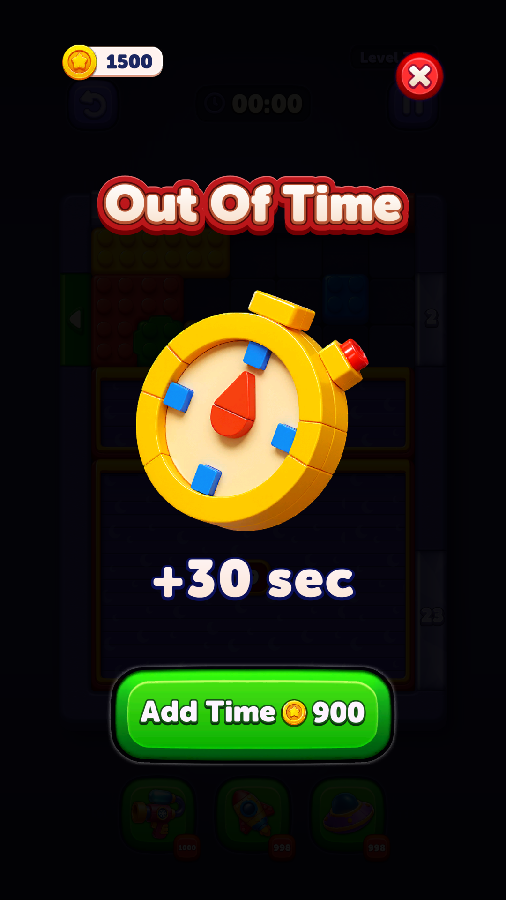
900 coin. Đóng bằng nút X để đi tiếp tới offer. Fixture: paw-quick-timer.PawTouchOffer · ảnh 03
Trạng thái bằng chứng: OFFLINE FIXTURE — ép mở cục bộ trên LDPlayer. Setup của ảnh: paw-quick-timer.
Quan sát: Sau đóng Out Of Time: Continue? có Play On 900 coin và Voyage Deal ở dưới: 100 coin + 15 phút mạng vô hạn, giá hiển thị 26.000 VND, timer gần 30 phút. Badge 0% OFF thuộc fixture gói fallback; không coi là mức giảm giá live.
 900 coin và Voyage Deal ở dưới: 100 coin + 15 phút mạng vô hạn, giá hiển thị 26.000 VND, timer gần 30 phút. Badge 0% OFF thuộc fixture gói fallback; không coi là mức giảm giá live. Fixture: paw-quick-timer.
900 coin và Voyage Deal ở dưới: 100 coin + 15 phút mạng vô hạn, giá hiển thị 26.000 VND, timer gần 30 phút. Badge 0% OFF thuộc fixture gói fallback; không coi là mức giảm giá live. Fixture: paw-quick-timer.Weekly Contest — màn kết quả hạng nhất
Case BO-EVT-WeeklyTournament. Đối chiếu feature: WeeklyTournament. Bằng chứng: 1 ảnh được chọn.
WeeklyTournament · Setup — trạng thái được chuẩn bị
Cache giải tuần: finished=true, thời điểm kết thúc đã qua, chưa claim, người kiểm thử rank=1 và score=1.000.
Các fixture được ghi cho nhóm ảnh này:
- weekly-result
Fixture là tiền điều kiện kiểm thử được gán cục bộ. Nếu có nhiều fixture, chúng là các lần chuẩn bị riêng; không gộp thành một phiên chơi tự nhiên liên tục.
WeeklyTournament · Trigger / thao tác và chuyển trạng thái được ghi nhận
Khởi động game; bảng kết quả Weekly tự mở. Quan sát podium, Rank #1, Reward 2.000; dừng trước Continue.
Từ cache tuần, gán người chơi hạng 1 và cuộc thi đã kết thúc. Game tự mở Leaderboard → Weekly ở trạng thái Finished, hiện podium và giải 2.000 coin.
WeeklyTournament · Quan sát cần đối chiếu
Bảng dưới là danh mục điểm quan sát theo thứ tự ảnh trong manifest. Chỉ câu nào ghi rõ thao tác trước/sau mới biểu thị một chuyển trạng thái đã thực hiện.
| Ảnh | Kết quả được ghi nhận |
|---|---|
| WeeklyTournament 01 | Ép cuộc thi đã kết thúc và người chơi hạng 1 với 1.000 điểm: Weekly Finished, podium 1–2–3, Rank #1 và Reward 2.000 coin. Nút Continue chưa được nhấn. |
WeeklyTournament · Giới hạn kết luận của case
Hạng và điểm được sửa để kiểm thử UI; không phải chiến thắng live. Không nhấn Continue/claim và chưa xác nhận cộng 2.000 coin.
WeeklyTournament · Ảnh minh họa và fixture từng ảnh
WeeklyTournament · ảnh 01
Trạng thái bằng chứng: OFFLINE FIXTURE — ép mở cục bộ trên LDPlayer. Setup của ảnh: weekly-result.
Quan sát: Ép cuộc thi đã kết thúc và người chơi hạng 1 với 1.000 điểm: Weekly Finished, podium 1–2–3, Rank #1 và Reward 2.000 coin. Nút Continue chưa được nhấn.
 2.000 coin. Nút Continue chưa được nhấn. Fixture: weekly-result.
2.000 coin. Nút Continue chưa được nhấn. Fixture: weekly-result.Special Offer — chưa mở được popup
Case BO-EVT-SpecialOffer. Đối chiếu feature: SpecialOffer. Bằng chứng: 1 ảnh được chọn.
SpecialOffer · Setup — trạng thái được chuẩn bị
Bật Adaptive Special Offer, gói fallback block.special1 chưa mua, instance còn hạn và ui_type=0.
Các fixture được ghi cho nhóm ảnh này:
- offer-preview
Fixture là tiền điều kiện kiểm thử được gán cục bộ. Nếu có nhiều fixture, chúng là các lần chuẩn bị riêng; không gộp thành một phiên chơi tự nhiên liên tục.
SpecialOffer · Trigger / thao tác và chuyển trạng thái được ghi nhận
Khởi động lại rồi kiểm tra Home; icon Special Offer chưa xuất hiện.
Đã bật cấu hình và gán instance offer từ gói fallback, ui_type=0. Sau khởi động, Home không xuất hiện icon Special Offer.
SpecialOffer · Quan sát cần đối chiếu
Bảng dưới là danh mục điểm quan sát theo thứ tự ảnh trong manifest. Chỉ câu nào ghi rõ thao tác trước/sau mới biểu thị một chuyển trạng thái đã thực hiện.
| Ảnh | Kết quả được ghi nhận |
|---|---|
| SpecialOffer 01 | Kết quả âm tính: sau ép cấu hình và instance offer còn hạn, Home vẫn không có icon Special Offer. Ảnh ghi nhận chưa mở được popup, không phải ảnh nội dung offer. |

SpecialOffer · Giới hạn kết luận của case
Mã game yêu cầu bundle surf_sale_bundle đã tải và load; dữ liệu cache khảo sát chưa có bundle đó. Điều kiện này giải thích giới hạn có thể gặp, nhưng ảnh Home không đủ tự chứng minh trạng thái nội bộ. Chưa có ảnh popup Special Offer; không thực hiện mua hoặc giả dựng ảnh.
SpecialOffer · Ảnh minh họa và fixture từng ảnh
SpecialOffer · ảnh 01
Trạng thái bằng chứng: OFFLINE FIXTURE — ép mở cục bộ trên LDPlayer. Setup của ảnh: offer-preview.
Quan sát: Kết quả âm tính: sau ép cấu hình và instance offer còn hạn, Home vẫn không có icon Special Offer. Ảnh ghi nhận chưa mở được popup, không phải ảnh nội dung offer.
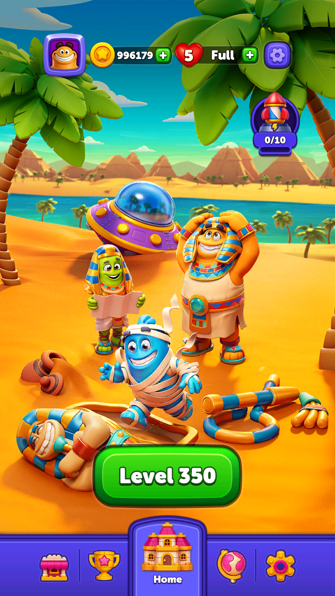
Cách dùng ảnh trong bài phân tích
Đọc ảnh cùng trạng thái trước và sau được ghi trong mô tả. Popup giới thiệu xác nhận cách game trình bày luật; bảng thưởng xác nhận phần thưởng đang hiển thị; popup hoàn thành chỉ xác nhận nhánh giao diện đó đã dựng. Muốn kết luận phần thưởng đã cộng vào kho cần thêm ledger trước/sau.
Nếu ledger cục bộ tăng đúng phần thưởng, ghi là đã cộng cục bộ trong fixture. Để gọi là server grant hoặc đồng bộ thành công cần bằng chứng riêng từ luồng xác thực/server; không nâng mức kết luận chỉ vì popup có dấu tích hoặc chữ Congratulations.
Các ảnh này cũng được thêm vào mục Ảnh chụp màn hình của từng feature. Nhấp ảnh để xem kích thước lớn. Ảnh và phân tích cũ được giữ để đối chiếu giữa các phiên.
Xem tiếp vòng đời sự kiện, sale và IAP, case kinh tế và live-ops, demo booster ngày 10/10.
Danh mục bằng chứng công khai và SHA-256 ảnh. Bản công khai chỉ chứa mô tả đã chọn và ảnh; không kèm save, PlayerPrefs hay cấu hình fixture riêng.